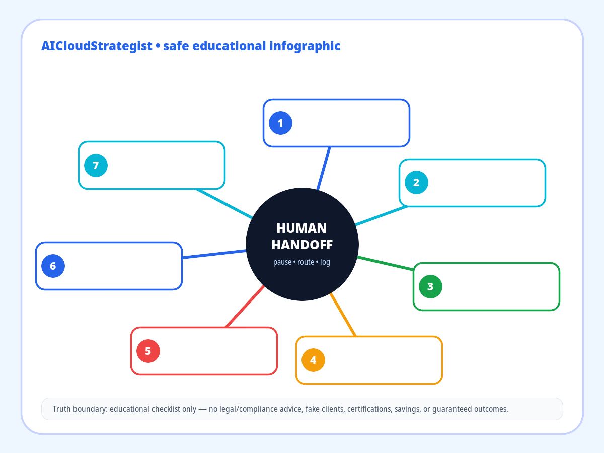

AI Workflow Handoff Map: 7 Places Automation Should Pause for a Human
Good automation is not a straight line. The safest AI workflows know when to continue, when to ask for context, and when to hand off to a named human owner.

Seven handoff triggers
- Unclear customer intent — pause, route to an owner, and keep evidence before the workflow continues.
- Missing identity context — pause, route to an owner, and keep evidence before the workflow continues.
- Credential or OTP request — pause, route to an owner, and keep evidence before the workflow continues.
- Legal, medical, or tax risk — pause, route to an owner, and keep evidence before the workflow continues.
- Price, refund, or contract ask — pause, route to an owner, and keep evidence before the workflow continues.
- Sensitive personal data — pause, route to an owner, and keep evidence before the workflow continues.
- Angry, urgent, or high-stakes tone — pause, route to an owner, and keep evidence before the workflow continues.
Use this map before connecting forms, CRM updates, email replies, scheduling, or support inbox actions into an AI workflow.
A practical first version does not need full autonomy. Start with routing, safe draft generation, owner alerts, and evidence logging. Let humans approve high-risk responses until the business has policy-backed rules.
Truth boundary: this is an educational operating checklist. It is not legal, medical, tax, security, or compliance advice and does not claim customer outcomes, certifications, savings, or guaranteed results.
AICloudStrategist publishes safe educational frameworks only: no fabricated clients, testimonials, certifications, rankings, or outcome claims.
Need this mapped in a real workflow?
This educational asset is not a customer case study or performance guarantee. For a permissioned workflow review, AICS can inspect owner assignment, escalation points, evidence logs and human-review rules before automation is scaled.